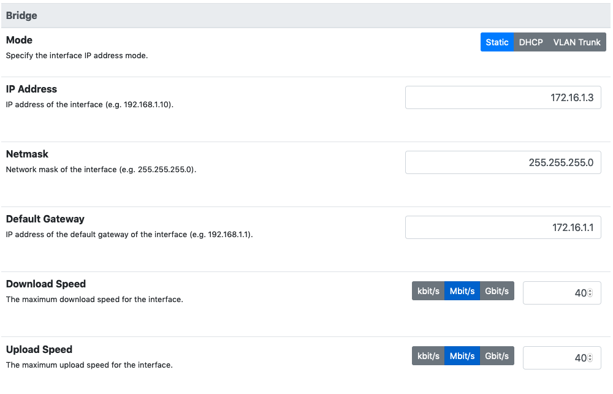
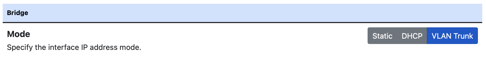

Режим моста
Режим моста — это самое простое решение для интеграции nEdge в существующую сеть.
Для режима моста необходимо указать два сетевых интерфейса:
Интерфейс LAN — это интерфейс, который будет защищен клиентами.
Интерфейс WAN — это интерфейс с внешним миром, обычно с интернет-шлюз.
Такое логическое разделение позволяет nEdge правильно идентифицировать клиентов, подлежащих мониторингу. (на интерфейсе LAN), не затрагивая rest сети (в WAN).

Конфигурация мостовой сети
nEdge можно настроить на автоматическое получение IP-адреса в DHCP режим клиента или IP-адрес, назначенный вручную. Обычно сервер DHCP уже доступен в сети, поэтому автоматическая настройка можно применить.
VLAN Перемычка багажника
nEdge также может соединять интерфейсы с трафиком, помеченным VLAN, когда он настроен как VLAN Магистральный мост.

VLAN Конфигурация сети магистрального моста
В режиме VLAN Trunk необходимо указать список локальных сетей, отредактировав файл вручную. /etc/ntopng/ntopng.conf через -м вариант. Политики будут применяться только к локальным хостам, поэтому это очень важно. Видеть документация ntopng для более подробной информации.
В режиме VLAN Trunk также важно настроить адрес управления для доберитесь до устройства (это необходимо сделать до применения настроек VLAN режима соединительной линии). во избежание потери доступа к управлению). Обычно это осуществляется одним из следующих способов:
с помощью выделенного сетевого интерфейса (для этой настройки требуется как минимум 3 сетевых интерфейса)
с помощью виртуального сетевого интерфейса, настроив VLAN (требуется только 2 сетевых интерфейса)
Хотя случай с выделенным сетевым интерфейсом тривиален и не требует специальной настройки, ниже приведены инструкции по настройке виртуального интерфейса через VLAN на вершине моста. создано Nedge.
В системах на базе netplan Ubuntu конфигурация интерфейсов записывается nedge в тот /etc/netplan/30-nedge.yaml файл. Возможна запись дополнительного файла конфигурации /etc/netplan/30-nedge-management.yaml который содержит конфигурацию виртуального интерфейса, как показано ниже. В этом примере мы предполагаем, что устройство должно быть видимо на VLAN 15 с IP-адресом 10.10.10.1.
$ cat /etc/netplan/30-nedge-management.yaml
network:
version: 2
vlans:
br0.15:
accept-ra: no
id: 15
link: br0
address: [ "10.10.10.1/24" ]
gateway4: 10.10.10.254
nameservers:
addresses: [8.8.8.8,8.8.4.4]
В Ubuntu 16 (устарело) конфигурация интерфейса управления должна быть записана в файл /etc/network/interfaces.d/nedge_mgmt.conf файл конфигурации. Вот пример:
$ cat /etc/network/interfaces.d/nedge_mgmt.conf
# https://bugs.launchpad.net/ubuntu/+source/ifupdown/+bug/1643063
# must specify the pre-up command and the vlan-raw-device
auto br0.15
iface br0.15 inet static
pre-up /sbin/ip link add link br0 name br0.15 type vlan id 15
vlan-raw-device br0
address 10.10.10.1
netmask 255.255.255.0
Идентификатор VLAN (15 в примере) должен соответствовать одному из идентификаторов VLAN, проходящих через ствол VLAN. Такой виртуальный интерфейс будет создан после перезагрузки. Когда VLAN На устройстве nEdge запущен транковый режим, администратор может подключиться к IP-адрес управления (в данном примере 10.10.10.1), настроив сетевой интерфейс на том же сеть (в данном примере 10.10.10.0/24). Например:
$ ifconfig eth0 10.10.10.99 netmask 255.255.255.0
Порт коммутатора, подключенный к интерфейсу администратора eth0, должен быть помечен таким же тегом. VLAN Идентификатор, настроенный в nedge_mgmt.conf файл (15 в этом примере), чтобы это работать.
Предупреждение
В связи с открытой проблемой(https://github.com/ntop/ntopng/issues/2117) пользователи должны быть очень осторожны при настройке политик блокировки в этом режиме, так как они повлияют на интерфейс управления, а также, возможно, заблокировать доступ к управлению.
Видеть управление для подробного описания работы сети Конфигурация выполняется nEdge.
Предупреждение
Перекрытие IP-адресов в нескольких VLAN не обрабатывается. nEdge будет показать их как один хост
Предупреждение
В этом режиме не выполняется ни CaptivePortal, ни принудительное применение DNS.
Полный прозрачный режим
Чтобы настроить nEdge как полностью прозрачный, то есть он не будет изменять сетевого трафика, но выдает только вердикт о прохождении/отбрасывании клиентских пакетов, некоторые следует проявлять осторожность.
Убедитесь, что Принудить глобально DNS отключен на странице настроек DNS.
Отключите Captive Portal, который может изменять пакеты для аутентификации устройств.
Поддерживаемые протоколы Ethernet
При работе в режиме моста nEdge поддерживает следующие протоколы Ethernet:
АРП
IPv4
Другие протоколы Ethernet (например, PPPoE) заблокирован поскольку nEdge их не обрабатывает.